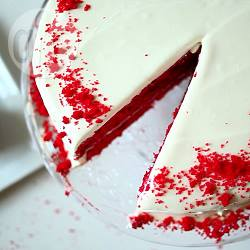

Heledd and Charlie's Baking Blog
Cake Recipes
Chocolate cake

- 3 Large eggs
- 175g Selfraising flour
- 175g Selfraising flour
- 175g Caster Sugar
- 175g Softened utter
- 1 1/2 tsp baking powder
- 40g cocoa powder
- 4 tbsp boiling water
- A little icing sugar to serve
- Preheat the oven to 180C
- Beat together the eggs, flour, caster sugar, butter and baking powder, in a large mixing bowl, until smooth.
- Sift the cocoa into a seperate bowl, add the water a little at a time to make a stiff paste. Add to the cake mix.
- Turn into prepared tins, level the top, and bake for 20-25 minutes
Tip!
You'll know your cake is baked when it's shrinking from the sides and feels springy, or when you poke it with a tooth pick it comes back clean.
| Icing Ingredients | Method |
|---|---|
|
To make the icing: measure the cream and chocolate into a bowl and carefully melt over a pan of hot water over a low heat, or gently in the microwave for 1 min (600w microwave). Stir until melted, then set aside to cool a little and to thicken up. To ice the cake: spread the apricot jam on the top of each cake. Spread half of the ganache icing on the top of the jam on one of the cakes, then lay the other cake on top, sandwiching them together. |
Red Velvet Cake

- 280g Plain Flour
- 2 tbsp Cocoa Powder
- 1 tsp salt
- 110g Butter
- 250g Caster Sugar
- 2 Eggs
- 1 tsp Vanilla extract
- 225ml Buttermilk
- 1 tbsp red food colouring gel
- 1 tsp Bicarbonate of Soda
- 1 tsp Vinegar
- Preheat the oven to 180 C / Gas 4. Grease two 23cm round cake tins and line the bottoms with baking parchment.
- Combine the flour, cocoa and salt. Set aside.
- In a large bowl, start whisking the butter. Once creamy, incorporate the sugar in two batches, whisking between each addition. Whisk in the eggs one by one, then the vanilla extract.
- Start adding the flour mixture to the butter mixture in batches, whisking well after each addition. The cake mixture will be thick. Add the buttermilk and food colouring; whisk till smooth.
- Working quickly, combine the bicarb and vinegar. Fold into the cake mixture. Once incorporated, divide the mixture between the two tins.
- Bake in the preheated oven then cool slightly in the tin before turning out onto a wire rack to cook completely.
- Once the cakes are completely cool, place the first layer on a serving plate. Cover the top with your favourite icing (cream cheese icing is the traditional match for red velvet cake, but you could also use vanilla buttercream). Place the second layer on top of the first, then ice the top and sides, if desired, with additional icing.
Cookie Recipes
Millionaire Shortbread

- 100g salted butter
- 50g caster sugar
- 150g plain flour
- Preheat the oven to 160C. Line an 8-inch square tin.
- Making the Shortbread; use a wooden spoon to combine the softened butter with the sugar in a large bowl until it forms a paste.
- Add the flour and gently mix it all together.
- Work the mix until all the crumbs are mopped up, then press it out flat in the lines tin, so its filled to the edges.
- Bake for 10-15 minutes then leave to cool.
| Caramel Ingredients | Method |
|---|---|
|
Whilst it's baking, start the caramel. Weigh all the ingredients into a saucepan and place on a medium-high heat, stirring gently. Watch it closely as you stir - you should start to see little slivers of brown where it has stuck to the bottom of the pan. If you see these bits, stir them in vigorously and turn the heat down to low-medium. Simmer gently until it is a colour that you like - I go for a deep, golden brown. When done, pour it on the shortbread and spread with a knife. |
Chocolate chip cookies

- 150g salted butter
- 80g Granulated Sugar
- 2 tsp Vanilla Extract
- 1 large egg
- 225g Plain Flour
- 80g Light Brown muscovado sugar
- 1/2 tsp Bicarbonate of Soda
- 1/4 tsp Salt
- 200g Chocolate Chips
- Preheat the oven to 190C/170C fan/gas 5. Line two baking trays with non-stick baking paper.
- Put the butter and sugars into a bowl and beat until creamy. Beat in the vanilla extract and egg.
- Sieve the flour, bicarbonate of soda and salt over the mixture and mix in with a wooden spoon. Add the chocchips and stir.
- Using a teaspoon, place small mounds of the mixture well apart on the baking trays.
- Bake in the oven for 8-10 mins until light brown on the edges and still slightly soft in the centre.
- Leave on the tray for a couple of minutes to firm up and then transfer to a cooling rack.